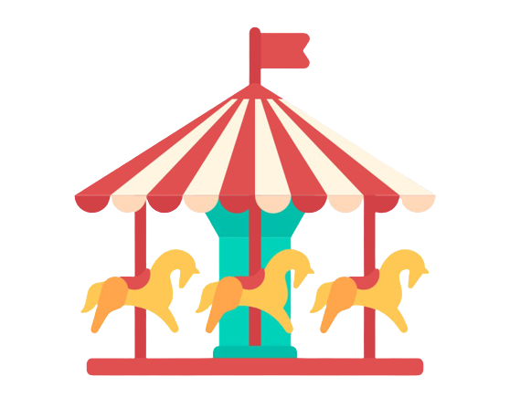
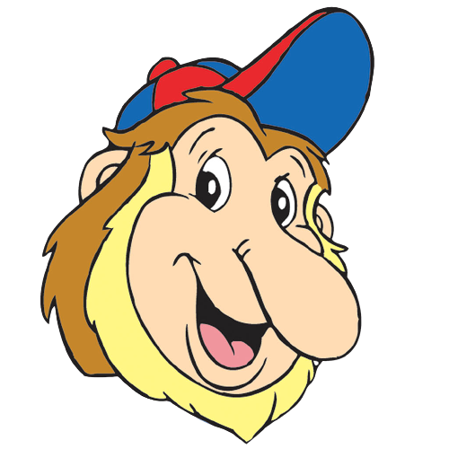

Sejarah
Proyek Dunia Fantasi dicanangkan pada awal tahun 1980 dimana pada saat itu Taman Impian Jaya Ancol masih dibawah kepemimpinan bapak Handogo Soekarno yang menjabat sebagai kepala divisi promosi Taman Impian Jaya Ancol.

• Dufan: Dunia Fantasi
• Dufi: Dunia Fiksi
• Kabul: Katak Tukang Kibul
• Bije: Bison Jenaka
• Garin: Garuda Indonesia
• Tanit: Tapir Genit
• Kombi: Komodo Gembira
• Cili: Kancil Licik
• Barus: Babi Rusa
Karakter-karakter dufan

Kawasan Dunia Fantasi
Pembagian kawasan ini ditujukan untuk membangkitkan imajinasi pengunjung yang diharapkan dapat merasakan sensasi Fantasi Keliling Dunia, Hikayat, dan Modern Dufan Era yang dimulai dari kawasan Jakarta, Amerika, Istana Boneka, Indonesia, Eropa, Asia, Misteri, Petualangan, Yunani, Kidz Fantasy, dan Dunia Kartun.